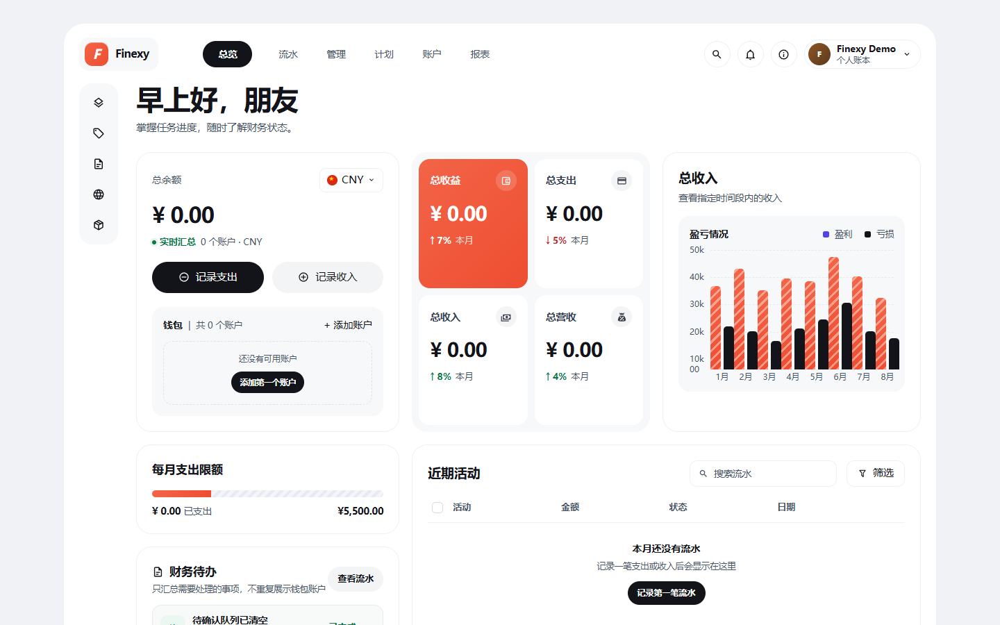

AI 文本记账
一句话描述花费，AI 自动解析金额、账户与分类，先进入待复核清单，确认后才入账。
开源 MIT · 自托管 · AI 驱动
Finexy 是自托管的 AI 个人财务工作台：记账、预算、资产、中文票据本地 OCR 与财务报告整合在统一界面。数据存放在你自己的服务器上，多端同步，完全由你掌控。

核心能力
从随手记账到深度分析，Finexy 把个人财务的每个环节收进同一个界面。
一句话描述花费，AI 自动解析金额、账户与分类，先进入待复核清单，确认后才入账。
自托管 OCR 服务识别中文小票，再由大模型结构化字段。票据图片留在自己的服务器里。
支出、收入、跨币种转账与期初余额全结构化，账户、分类、标签、备注一一对应。
月度预算进度实时可见，超支提前预警；资产清单记录购入与卖出，估值一目了然。
内置市场汇率参考与自定义汇率，跨币种转账自动给出换算建议，缺失时仍可手填。
房租、订阅等周期账单到期先进入待确认队列，确认后才生成流水，避免重复入账。
收支趋势、分类与标签统计、月度对比与 CSV 导出，桌面级高密度信息布局。
SQLite 存储、完整备份恢复、可选 DeepSeek API Key，并提供 MCP 接口连接 AI 客户端。
产品界面
高密度信息布局，重要数据一屏尽览；Web 与移动端保持同一品牌与口径。
自托管部署
提供公开 Docker 镜像与 NAS 部署包，也支持从源码构建。账本数据只落在你的磁盘上。
docker pull ph97/finexy-bookkeeping:latest-amd64
公开镜像，无需登录。搜索时请使用完整名称 ph97/finexy-bookkeeping。
docker compose up -d
群晖、威联通等 AMD64 NAS 可直接使用 NAS 部署配置。
http://服务器IP:8080/
浏览器直接使用，可安装为 PWA；也可选配 DeepSeek API Key 启用 AI 能力。
下载
所有发布文件统一发布在 GitHub Releases，并提供 SHA-256 校验值。
安装版与便携版，x64。客户端连接到已部署的 Finexy 服务。
在线部署配置包与离线镜像 tar，适配群晖、威联通等 AMD64 NAS。
原生 Kotlin 客户端，离线记账自动同步。当前为调试签名测试版。
部署完成后浏览器直接访问，无需安装；可添加到主屏幕作为 PWA 使用。
Windows 包未做代码签名，首次运行 SmartScreen 可能提示；Android APK 为调试签名测试版。请只从本仓库 Releases 下载，并核对 SHA256SUMS.txt。